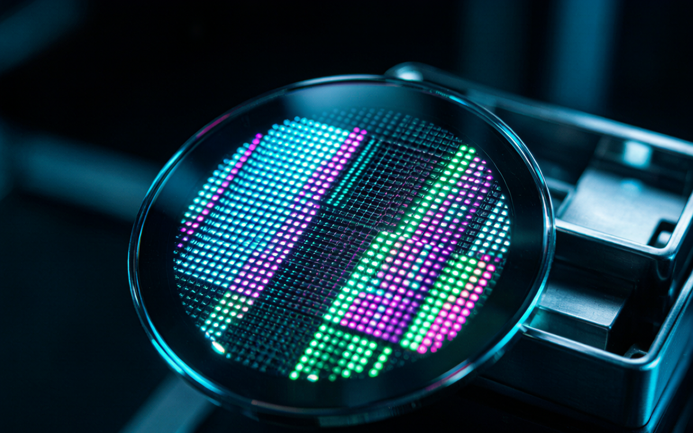
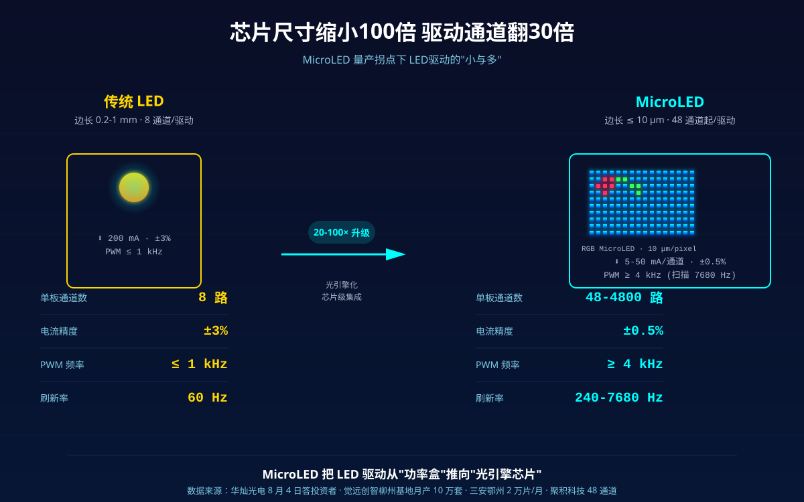
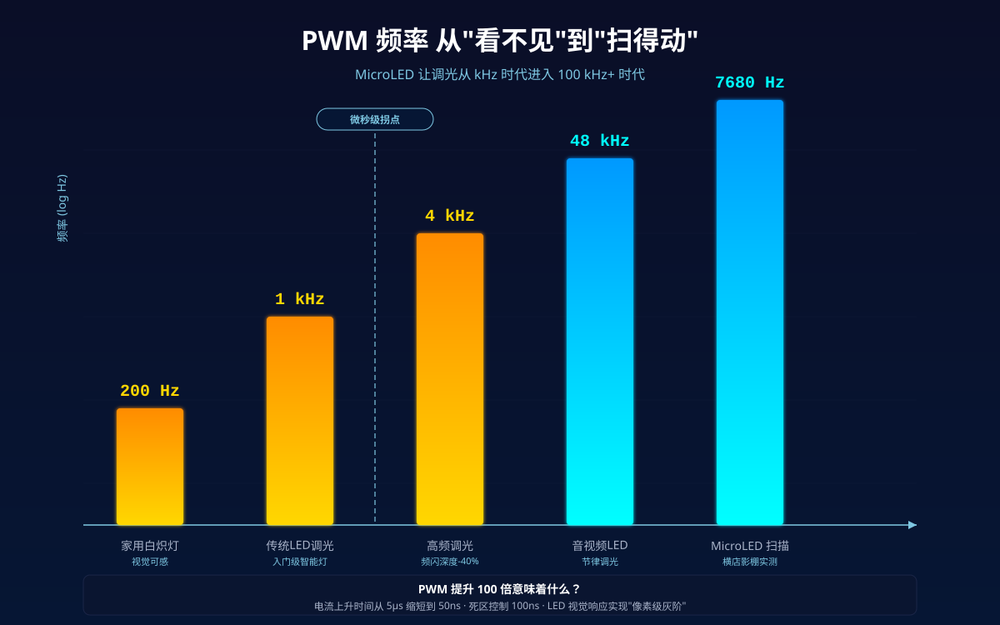
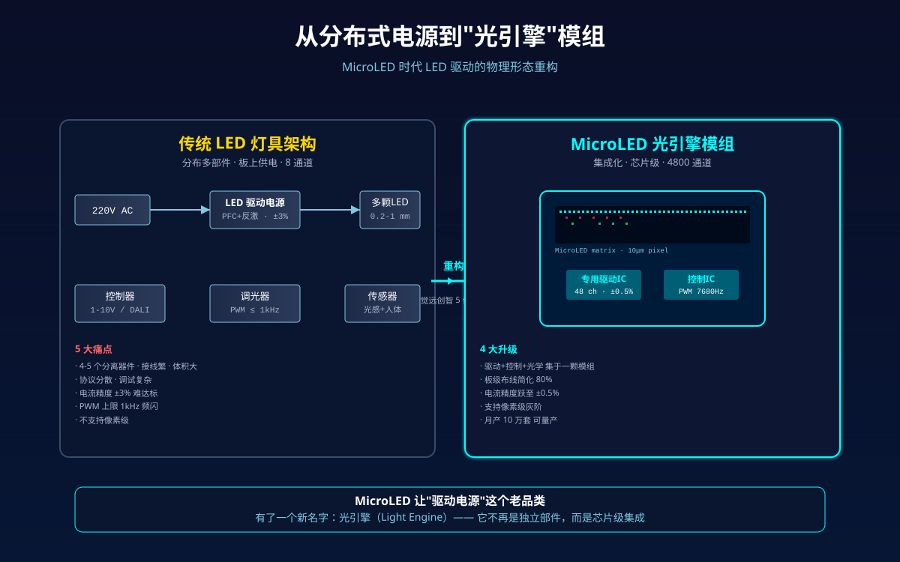

2026-08-04，华灿光电在投资者互动平台答问：6英寸Micro LED产线已规模化量产，量产良率突破90%。同月，觉远创智在广西柳州5亿布局的MicroLED光引擎制造基地正在推进，预计2026下半年正式投产，月产10万套光引擎。从智能手表屏幕到车载迎宾灯，从AR眼镜到裸眼3D大屏，MicroLED正在跨过"试产-量产"的那道坎。但照明行业大多数人对这件事的感知，仍然停在"它只是另一种更小的LED"上。
我想换一个视角看：MicroLED量产，不只是面板厂商的事。它正在把"LED驱动电源"这个我们熟悉的部件，推向一个全新的技术拐点。
一、一个被忽视的事实：MicroLED的"小"，正在改写驱动的"大"
传统LED一颗芯片边长0.2-1mm，MicroLED一颗10微米以下——小了20到100倍。但这"小"不是简单缩小，它是三个全新的物理挑战：

1. 巨量驱动的"通道密度"——从8路到4800路
一块8K MicroLED屏有约3300万像素点，按RGB三色算需要9900万个独立电极。传统8通道LED驱动一颗驱动几十颗灯；MicroLED巨量转移后，每颗灯都需要独立的电流通道。三安光电在湖北鄂州的2万片/月MicroLED外延片产线，背后是密密麻麻的专用驱动IC。聚积科技今年推出的共阴极驱动IC直接做到48通道独立调光、功耗降30%——这只是开始。
2. 纳秒级PWM——从"看得见"的闪烁到"看不见"的精度
传统LED调光是PWM频率200-1000Hz，肉眼已经够用。MicroLED屏幕需要240Hz、480Hz甚至7680Hz刷新率（横店MicroLED虚拟影棚刷新率就是7680Hz）。这意味着驱动IC的PWM频率要从"毫秒级"提到"微秒级"——边沿斜率、电流上升时间、死区控制全部要重做。

3. 亚毫安级恒流——从±3%到±0.5%
传统照明驱动电流精度±3%已经够用。MicroLED的亮度均匀性直接由电流精度决定——5%电流偏差肉眼可感，0.5%偏差才"无差别"。这要求驱动IC内置16bit DAC、自动补偿LED温漂和老化漂移。
二、行业已经在做三件事
第一件事：光引擎化。
觉远创智5亿布局的不是芯片也不是灯，是"光引擎"——把驱动IC+控制IC+光学元件集成在一个模组里。这其实是把"驱动电源"从分布式的板上器件，收到了"一颗芯片级别"的模组里。NEXLAMP做过的小型化尝试，跟这个思路异曲同工——我们想做的"Driver-Dimmer All-in-One"86盒插墙式，本质也是光引擎，只是尺寸更大。

第二件事：驱动IC国产化。
华灿光电6英寸MicroLED产线+巨量转移+MPD封装，三位一体打通。这意味着下游厂商可以拿到国产化、价格只有国外方案60-70%的MicroLED专用驱动IC。目前聚积科技、集创北方、视芯科技都已量产MicroLED专用驱动。
第三件事：场景分层。
8月4日华灿答投资者问披露的"梯度化发展格局"特别值得关注——MPD量产、COW推进、AR小批量、全彩DEMO年底。这意味着MicroLED不是"全有或全无"，不同场景在不同阶段：
- 手表/手机副屏：已稳定量产
- 大尺寸商用大屏：2026 Q3规模化交付
- 车载/AR：2026 Q4 DEMO，2027年小批量
- 普通家用照明：3-5年外的事
三、对我们这些做"驱动电源"的人意味着什么
我在NEXLAMP接触的工程师同行里，对这件事的反应分两类：
一类人觉得"MicroLED离普通照明还远，先做手头订单"； 另一类人开始悄悄调整产品规划——给现有驱动IC加PWM频率档位、把恒流精度从±3%做到±1%、在电源板上预留MicroLED接口。
我倾向第二种。不是因为我们马上要做MicroLED产品，而是因为—— 当MicroLED渗透到车载、AR、商业大屏时，所有做"高端LED驱动"的厂商都要面对新的技术门槛。这个门槛，是3年后要交的学费，不如现在就开始交。
四、给同行三个实操建议
1. 把现有驱动IC的PWM频率上限拉到4kHz以上。增加成本不到5%，但你已经为"调光更精细""支持MicroLED背光"留好了路。LED调光从1kHz升到4kHz，频闪深度能再压40%——单是这一项就值回票价。
2. 评估一下"恒流精度±0.5%"的可行性。通过添加外部16bit DAC+闭环反馈，普通方案也能做到±1%。这是进入Mini/MicroLED背光供应链的入门券。
3. 关注光引擎模组这个新品类。觉远创智月产10万套只是起步。2027年光引擎可能成为智能照明产业链的一个独立环节，集成驱动+控制+光学。它不是要替代你的驱动电源，但会重新定义"什么是合格的电源"。
MicroLED离"飞入寻常百姓家"还有至少5年。但驱动电源行业从来不缺"等风来"的人，缺的是"风还没到就把桨修好"的人。
关于NEXLAMP耐利普：专注涂鸦Zigbee/Matter智能照明系统，提供7W-400W全功率段LED驱动电源、灯具与控制系统。已服务全球300+工程项目。如果你正在评估MicroLED光引擎方案或新一代高密度LED驱动，欢迎联系：刘先生 +86 13825496855，www.nexlamp.com。